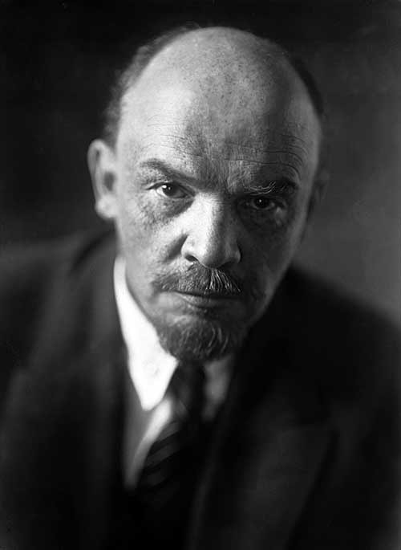

A Rússia sofreu muito com os efeitos negativos da Primeira Guerra Mundial. O grande número de vítimas, combinado com a estagnação econômica e a escassez de alimentos, deixou o povo irritado, inquieto e crítico às autoridades do país. Essa instabilidade nacional culminou na derrubada de uma monarquia cristã milenar, bem como na execução do czar russo [e de toda a sua família] — a dinastia Romanov. Essa revolução ocorreu em fevereiro de 1917 (março no calendário gregoriano), e um governo provisório foi estabelecido em seu lugar. Com a derrubada da monarquia russa, Vladimir Lênin, então exilado da Rússia por agitação política revolucionária, viu a oportunidade de retornar e envolver-se de novo na política de seu país.
Lênin tornou-se o líder da Rússia, e os bolcheviques se tornaram o Partido Comunista. Esse foi o principal evento que levou à fundação da União Soviética. O país que antes era chamado de “Santa Rússia” por seu povo, uma terra rica em fé e tradição, caiu por terra.
Para cumprir a meta de Lênin, de implementar seus ideais marxistas e transformar a Rússia em um país comunista, era essencial eliminar a influência do cristianismo, especialmente da Igreja Ortodoxa Russa. No ano seguinte, [então], sancionou-se a lei de separação entre a Igreja e o Estado, “a fim de garantir a genuína liberdade de consciência do povo trabalhador” — ou seja, liberdade das restrições morais impostas pela religião. Tal norma, de fato, impunha o ateísmo estatal. Embora a religião não tenha sido oficialmente banida, sua influência na sociedade foi atacada de propósito e com violência. Os revolucionários marxistas sabiam que, para minar a prática religiosa, era preciso primeiro corromper a moralidade das pessoas. Para alcançar esse objetivo, os bolcheviques instituíram o divórcio sem culpa, com o casamento civil suplantando o sacramental. O divórcio passou a ser feito de forma rápida e fácil, sem provisões para o sustento dos filhos.O resultado foi a absoluta decadência moral do povo. Antes um povo profundamente religioso, muitos russos tornaram-se promíscuos e literalmente começaram a divorciar-se e casar de novo conforme mudavam as estações.Sob o regime comunista, a Rússia tornou-se o primeiro país do mundo a legalizar o abortamento e, por fim, a nação com a maior taxa de abortos e divórcios do mundo.

Depois que Lênin derrotou todos os inimigos políticos que ameaçavam seu poder, a União Soviética foi formada em 1922 sob o comando do secretário Joseph Stálin. Lênin tornou-se então o primeiro ditador do primeiro Estado marxista do mundo, ainda que por pouco tempo, pois morreu em 1924. Sua crueldade contra os inimigos políticos abriu precedentes para que seu sucessor, Joseph Stálin, presidisse uma campanha de brutalidade contra os próprios concidadãos, especialmente os seguidores de Cristo.Embora Nossa Senhora tenha mencionado a necessidade da consagração da Rússia durante suas aparições em Fátima, ela não a pediu formalmente naquela ocasião. Esse pedido só foi feito à Irmã Lúcia em 13 de junho de 1929. Mais uma vez, o momento foi providencial, pois um evento significativo se dava na Rússia: em 1929, teve início uma nova onda de perseguição antirreligiosa, sob a ditadura do infame Joseph Stálin.Antes, a Igreja Ortodoxa era perseguida de forma indireta; os cristãos eram encarcerados como inimigos do Estado. Agora, uma campanha política oficial foi iniciada para destruir de fato a Igreja. Propriedades e riquezas eclesiásticas foram confiscadas, atividades religiosas foram proibidas, igrejas foram destruídas e quase todo o clero, junto com muitos leigos, foi morto ou enviado para campos de concentração. O cristianismo na Rússia foi forçado a esconder-se.Além de desencadear uma severa perseguição à Igreja Ortodoxa, Stálin se voltou de forma maligna contra seus compatriotas. Na década de 1930, forçou uma fome artificial na Ucrânia: o genocídio matou de 7 a 8 milhões de pessoas. Durante o pior período da fome, de 1932 a 1934, estima-se que cerca de 30 mil ucranianos morriam de fome todos os dias.